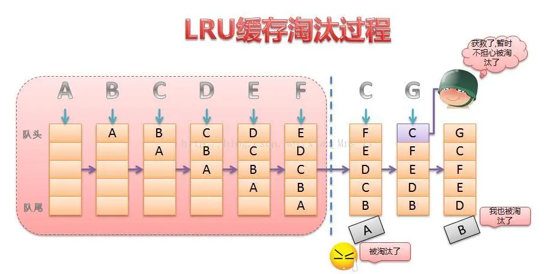

vue 相关面试题
前言
本人平时学习及收集内容，欢迎参入一起讨论。
内容
- v-show 与 v-if 有什么区别？
- Class 与 Style 如何动态绑定？
- 直接给一个数组项赋值，Vue 能检测到变化吗？
- 组件通讯
- 谈谈你对 Vue 生命周期的理解？
- 在什么阶段才能访问操作 DOM？
- v-model 的原理？
- 使用过 Vue SSR 吗？说说 SSR？
1. v-show 与 v-if 有什么区别？
v-if：是真正的条件渲染，因为它会确保在切换过程中条件块内的事件监听器和子组件适当地被销毁和重建；也是惰性的；如果在寝沉浸时条件为假，则什么也不做——直到条件第一次变为真时，才会开始渲染条件块。v-show：就简单得多——不管寝条件是什么，元素总是会被渲染，并且只是简单地基于 CSS 的"display"属性进行切换。
所以，v-if 适用于在运行时很少改变条件，不需要频繁切换条件的场景；v-show 则适用于需要非常频繁切换条件的场景。
2. Class 与 Style 如何动态绑定？
Class 可以通过对象语法和数组语法进行动态绑定：
- 对象语法：
<div v-bind:class="{active: isActive,'text-danger':hasError}"></div>
data:{
isActive: true,
hasError: false
}
2
3
4
5
6
- 数组语法：
<div v-bind:class="[isActive? activeClass:'',errorClass]"></div>
data:{
activeClass: 'active',
errorClass:'text-danger'
}
2
3
4
5
6
Style也可以通过对象语法和数组语法进行动态绑定：
- 对象语法：
<div v-bind:style="{color:activeColor,fontSize:fontSize+'px'}"></div>
data: {
activeColor:'red',
fontSize:30
}
2
3
4
5
6
- 数组语法：
<div v-bind:style="[styleColor,styleSize]"></div>
data:{
styleColor:{
color: 'red'
},
styleSize:{
fontSize:'23px'
}
}
2
3
4
5
6
7
8
9
10
3. 直接给一个数组项赋值，Vue 能检测到变化吗？
由于 JavaScript 的限制，Vue 不能检测到以下数组的变动：
- 当你利用索引直接设置一个数组项时，例如：
vm.items[indexOfItem]=newValue - 当你修改数组的长度时，例如：
vm.items.length=newLength
为了解决第一个问题，Vue 提供了以下操作方法：
// Vue.set
Vue.set(vm.items, indexOfItem, newValue)
// vm.$set，Vue.set的一个别名
vm.$set(vm.items, indexOfItem, newValue)
// Array.prototype.splice
vm.items.splice(indexOfItem, 1, newValue)
2
3
4
5
6
7
为了解决第二个问题，Vue 提供了以下操作方法：
// Array.prototype.splice
vm.items.splice(newLength)
2
4. 组件通讯
参考vue 组件通信
5. 谈谈你对 Vue 生命周期的理解？
参考Vue 生命周期
6. 在什么阶段才能访问操作 DOM？
在钩子函数 mounted 被调用前，Vue 已经将编译好的模板挂载到页面上，所以在 mounted 中可以访问操作 DOM。
7. v-model 的原理？
指令v-model指令在表单 input、textarea、select 等元素上创建双向数据绑定，我们知道 v-model 本质上不过是语法糖，v-model 在内部为不同的输入元素使用不同的属性并抛出不同的事件：
- text 和 textarea 元素使用 value 属性和 input 事件；
- checkbox 和 radio 使用 checked 属性和 change 事件；
- select 字段将 value 作为 prop 并将 change 作为事件；
以 input 表单元素为例：
<input v-model='something'>
相当于
<input v-bind:value="something" v-on:input="something = $event.target.value">
2
3
4
5
如果在自定义组件中，v-model 默认会利用名为 value 的 prop 和名为 input 的事件，如下所示：
父组件：
<ModelChild v-model="message"></ModelChild>
子组件：
<div>{{value}}</div>
props:{
value: String
},
methods: {
test1(){
this.$emit('input', '小红')
},
},
2
3
4
5
6
7
8
9
10
11
12
13
14
8. 使用过 Vue SSR 吗？说说 SSR？
9. 能说下 vue-router 中常用的 hash 和 history 路由模式实现原理吗？
10. Proxy 与 Object.defineProperty 优劣对比
Proxy 的优势如下：
- Proxy 可以直接监听对象而非属性；
- Proxy 可以直接监听数组的变化；
- Proxy 有多达 13 种拦截方法,不限于 apply、ownKeys、deleteProperty、has 等等是 Object.defineProperty 不具备的；
- Proxy 返回的是一个新对象,我们可以只操作新的对象达到目的,而 Object.defineProperty 只能遍历对象属性直接修改；
- Proxy 作为新标准将受到浏览器厂商重点持续的性能优化，也就是传说中的新标准的性能红利；
Object.defineProperty 的优势如下:
- 兼容性好，支持 IE9，而 Proxy 的存在浏览器兼容性问题，而且无法用 polyfill 磨平，因此 Vue 的作者才声明需要等到下个大版本(c.0)才能用 Proxy 重写。
11. 虚拟 DOM 的实现原理及优缺点？
12. 组件中 data 为什么是一个函数？
因为组件是用来复用的，且 JS 里对象是引用关系，如果组件中 data 是一个对象，那么这样作用域没有隔离，子组件中的 data 属性值会相互影响，如果组件中 data 选项是一个函数，那么每个实例可以维护一个被返回对象的独立的拷贝，组件实例之间的 data 属性值不会互相影响；而new Vue的实例，是不会被利用的，因此不存在引用对象的问题。
13. computed 和 watch 的区别和运用的场景？
参考Vue 中的 computed,watch,methods 理解与分析
14. 谈谈你对 keep-alive 的了解？
keep-alive是 Vue 内置的一个组件，可以使被包含的组件保留状态，避免重新渲染，其有以下特性：
- 一般结合路由和动态组件一起使用，用于缓存组件；
- 提供 include 和 exclude 属性，
- 对应两个钩子函数
activated和deactivated，当组件被激活时，触发钩子函数 activated，当组件被移除时，触发钩子deactivated。
原理
- 获取 keep-alive 包裹着的第一个子组件对象及其组件名
- 根据设定的
include/exclude（如果有）进行条件匹配决定是否缓存。不匹配，直接返回组件实例 - 根据组件
ID和tag生成缓存Key，并在缓存对象中查找是否已缓存过该组件实例。如果存在，直接取出缓存值并更新该 key 在 this.keys 中的位置（更新 key 的位置是实现 LRU 置换策略的关键） - 在 this.cache 对象中存储该组件实例并保存 key 值，之后检查缓存的实例数量是否超过 max 的设置值，超过则根据 LRU 置换策略删除最近最久未使用的实例（即是下标为 0 的那个 key）
- 最后组件实例的 keepAlive 属性设置为 true,这个在渲染和执行被包裹组件的钩子函数会用到,这里不细说
LRU 缓存淘汰算法
LRU（Least recently used）算法根据数据的历史访问记录来进行淘汰数据,其核心思想是“如果数据最近被访问过,那么将来被访问的几率也更高”。

keep-alive 的实现正是用到了 LRU 策略,将最近访问的组件 push 到 this.keys 最后面,this.keys[0]也就是最久没被访问的组件,当缓存实例超过 max 设置值,删除 this.keys[0]
15. vuejs与angularjs以及react的区别？
与Angular JS的区别
相同点：
- 都支持指令：内置指令和自定义指令。
- 都支持过滤器：内置过滤器和自定义过滤器。
- 都支持双向数据绑定。
- 都不支持低端浏览器。
不同点：
- Angular JS的学习成本高，比如拉回了Dependency Injectior特性，而Vue.js本身提供的API都比较简单、直观。
- 在性能上，Angular JS任斯璐对数据做脏检查，所以Watcher越多越慢。
- Vue.js使用基于依赖追踪的观察并且使用异步队列更新。所有的数据都是独立触发的。
与React的区别
相同点：
- React采用特殊的JSX语法，Vue.js在组件开发中也推崇编写.vue特殊文件格式，对文件内容都有一些约定，两者都需要编译后使用。
- 中心思想相同：一切都是组件，组件实例之间可以嵌套。
- 都提供合理的钩子函数，可以让开发者定制化地去处理需求。
- 都不内置列表AJAX、Route等功能到核心包，而是以插件的方式加载。
- 在组件开发中都支持mixins的特性。
不同点：
- React依赖Virtual DOM，而Vue.js使用的是DOM模板。React采用的Virtual DOM会对渲染出来的结果做脏检查。
- Vue.js在模板中提供了指令，过滤器等，可以非常方便，快捷地操作DOM。
16.长列表性能优化
Vue会通过Object.defineProperty对数据进行劫持，来实现视图响应的变化，然而有些时候我们的组件就是纯粹的数据展示，不会有任何改变，我们就不需要Vue来支持我们的数据，在大量数据展示的情况下，这能够很明显的减少组件初始的时间，那如何禁止Vue劫持我们的数据呢？可以通过Object.freeze方法来冻结一个对象，一旦被冻结的对象就再也不能被修改了。
export default{
data:()=>({
users:{}
}),
async created(){
const users = await axios.get('/api/users');
this.users = Object.freeze(users);
}
}
2
3
4
5
6
7
8
9
17.事件的销毁
Vue组件销毁时，会自动清理它与其它实例的连接，解绑它的全部指令及事件监听器，但是仅限于组件本身的事件。如果仅限于组件本身的事件。如果在js内使用addEventListene等方式是不会自动销毁的，我们需要在组件销毁时手动移除这些事件的监听，以免造成内存泄露，如：
created(){
addEventListener('click',this.click,false)
},
beforeDestroy(){
removeEventListener('click',this.click,false)
}
2
3
4
5
6
19.图片资源懒加载
对于图片过多的页面，为了加速页面加载速度，所以很多时候我们需要将页面内未出现在可视图可视区域内的图片先不做加载，等到滚动到可视区域后再去加载。这样对于页面加载性能上会有很大的提升，也提高了用户体验。我们在项目可使用vue-lazyload插件
20. 优化无限列表性能
如果你的应用存在非常长或者无限滚动的列表，那么需要采用窗口化的技术来优化性能，只需要渲染少部分区域的内容，减少重新渲染组件和创建dom节点的时间。可以使用vue-virtual-scroll-list和vue-virtual-scroller来优化这种无限列表的场景的。
说说你对angular脏检查理解？
在angular中你无法判断你的数据是否做了更改，所以它设置了一些条件，当你触发这些条件之后，它就执行一个检测来遍历所有的数据。对比你更改的地方，然后执行变化。这个检测很不科学。而且效率不高，有很多多余的地方，所以官方称为 脏检查。
简述一下Sass、Less，且说明区别？
他们是动态的样式语言，是CSS预处理器，CSS上的一种抽象层。他们是一种特殊的语法/语言而编译成CSS。
变量符不一样，less是@，而Sass是$;
Sass支持条件语句，可以使用if{}else{},for{}循环等等。而Less不支持；
Sass是基于Ruby的，是在服务端处理的，而Less是需要引入less.js来处理Less代码输出Css到浏览器
聊聊你对Vue.js的template编译的理解？
简而言之，就是先转化成AST树，再得到的render函数返回VNode（Vue的虚拟DOM节点）
详情步骤：首先通过compile编译器把template编译成AST语法树（abstract syntax tree 即源代码的抽象语法结构的树状态表现形式），compile是createCompiler的返回值，createCompiler是用以创建编译器的。另外compile还负责合并option。然后，AST会经过generate（将AST语法树转化成render function字符串的过程）得到render函数，render的返回值是VNode，VNode是Vue的虚拟DOM节点，里面有（标签名、子节点、文本等等）
参考资料
- 公司要求会使用框架 vue，面试题会被问及哪些？
- 面试必备的 13 道可以举一反三的 Vue 面试题
- 30 道 Vue 面试题，内含详细讲解（涵盖入门到精通，自测 Vue 掌握程度）
- Vue 开发必须知道的 36 个技巧【近 1W 字】
- Vue 项目里戳中你痛点的问题及解决办法
- VueRouter 源码深度解析
- 12 道 vue 高频原理面试题,你能答出几道?
- 吃透 Vue 项目开发实践｜ 16 个方面深入前端工程化开发技巧《上》
- vue 面试题总汇
联系作者
平凡世界，贵在坚持。

← vue 源码分析